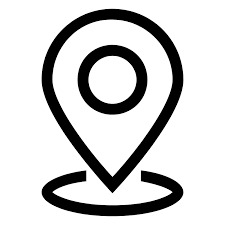

<nav class="navbar navbar-expand-lg navbar-light">
    <div class="collapse navbar-collapse" id="navbarSupportedContent">
      <ul class="navbar-nav mr-auto">
        <li class="nav-item">
          <a class="nav-link" href="/kezdooldal">Kezdőoldal
            
            </a>
        </li>
        <li class="nav-item">
            <a class="nav-link" href="/esemenyKereso">Esemény kereső
              
              </a>
          </li>
          <li class="nav-item">
            <a class="nav-link" href="/kedvencek">Kedvelt előadók/helyszínek
              
              </a>
          </li>
      </ul>
    </div>
  </nav>
  <hr>